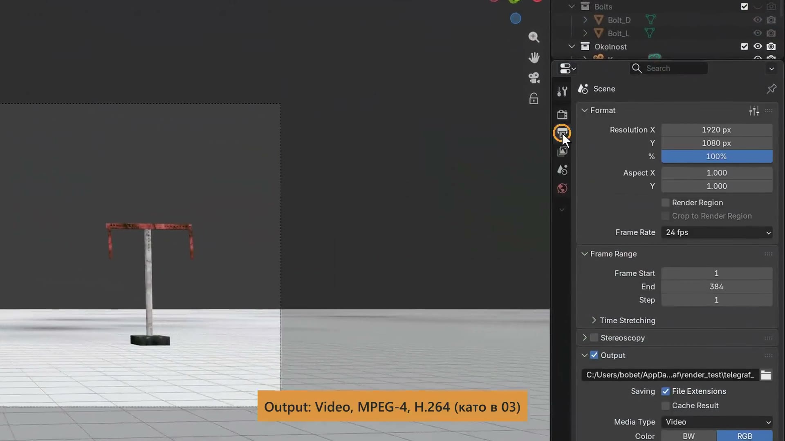

Всеки обект се върти около своя център (Origin), оранжевата точка. Центърът на рамото (Ramo_L) е в средата му, затова при R Y то се откъсва от гредата.
Центърът трябва да е в болта (Bolt_L):
Ако при Set Origin е маркиран болтът, а не рамото, се мести центърът на болта. Проверете кой обект е с оранжев контур (активният, Active).
Детето (Child) следва родителя (Parent), но може да се движи и само. Маркирайте първо детето, после с Shift + клик родителя: последният маркиран е активният (Active), по-светлият. После Ctrl P → Object (Keep Transform).
Веригата е от четири нива: Osnova → Stulb → Greda → Ramo_L и Ramo_D. Болтовете (Bolt_L, Bolt_D) са помощни и не се рендират, затова ги скрийте с окото в Outliner (Hide in Viewport).
При обърнат ред Greda става дете на рамото. Поправя се с Alt P → Clear Parent.
Втори клик на същото място върху активен обект маркира обекта зад него. Кликнете на друго място.
Знакът се чете само ако постои, затова всяка поза има два ключа (Keyframe):
Рамото помни ъгъла си спрямо гредата (Greda е негов Parent): когато гредата се завърти, рамената тръгват с нея, без да се разпадат. Ъглите са в азбуката на страницата „Задача“.
Ако една от трите части няма ключ, тя се връща в старата си поза. Маркирайте Greda, Ramo_L и Ramo_D, преди да натиснете I (Insert Keyframe).
Всичко по външния вид (модификатори и материали) се прави преди копирането на кулата, за да го вземе и копието.
Bevel е модификатор (Modifier), който закръгля ръбовете: тънкият ръб хваща светлина и кутията спира да изглежда като кутия.
От една снимка (Image Texture) излизат три неща:
Снимките са в папката textures. Довлачете ги от File Browser горе вляво направо в Shader Editor. UV картите са готови в стартовия файл.
Възел (Node), пуснат върху съществуваща връзка (Link), се вмъква в нея и избутва Principled надясно. Добавете възлите първо, после ги свържете.
Подът и фонът са с Voronoi Texture: светъл под с петна и облачен фон като циклорама. Телеграфът стои като декор на сцена.
Топлото слънце (Slunce, Sun) остава. Срещу него добавете цветен Spot отгоре вляво.
Снимките са извън файла (.blend) и на друг компютър текстурите (Image Texture) стават розови. File → External Data → Pack Resources ги вгражда във файла.
Десен клик върху Osnova в Outliner → Select Hierarchy маркира цялата кула. Shift D, X 12, Enter. Копието носи свои ключове (Keyframes), същите материали, Bevel и UV Map.
В Dope Sheet A маркира ключовете на копието, G 48 ги отмества с 2 секунди. Втората кула повтаря съобщението като щафета.
Ако копирате и местите само Stulb, при пускане той скача обратно, защото I е записал и позицията му. Местете Osnova: тя няма ключове.
Една и съща дума, два характера. Първата кула е пъргава: Ramo_L и Ramo_D закъсняват след Greda и прескачат знака.
Втората кула е стара и тракаща. Филтърът Y Euler оставя само кривата на завъртането. Клик върху ключ я прави активна (Active F-Curve), после в страничната лента (Sidebar, N) Modifiers → Add Modifier.
Add Modifier е сив, ако няма активна крива: кликнете ключ. Клик върху вече отворения раздел Modifiers скрива Sidebar, а N я връща.
Докато рендира, Blender не реагира.
Сглобете механизма на оптическия телеграф и го накарайте да изпрати дума.
| # | Елемент | Техника | |
|---|---|---|---|
| 1 | Рамената | Origin в болта (Bolt_L, Bolt_D) | |
| 2 | Веригата | Parent (Ctrl P) | |
| 3 | Думата | Keyframes и задържане | |
| 4 | Форма, материали и светлина | Bevel, Image Texture, Voronoi Texture, Sun и цветен Spot | |
| 5 | Втората кула | Duplicate от Osnova (Select Hierarchy) и отместване на Keyframes | |
| 6 | Характерът | Graph Editor | |
| 7 | Клипът | Render Animation |